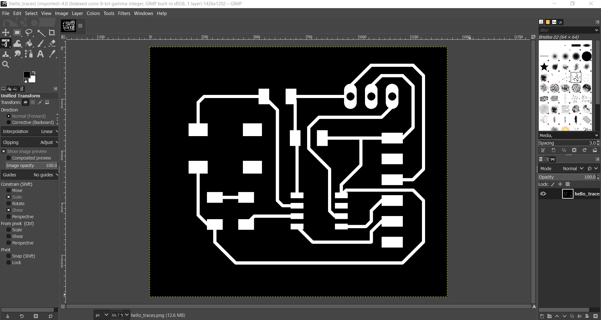

On the third and fourth week, Mr Chew taught us how to design our own circuit using EAGLE software and how to be able to convert the schematic design into a PCB design and then mill out the design.
We will be following the ATTiny-412 hellow world board schematic but we will add a LED and switch to the schematic
What is EAGLE?
EAGLE is a software where you can create your own circuits.
Let's Get Started: Adding Libraries
Fab Library
- Click this link to bring you to gitlab fab library
- Click onto eagle > fab.lbr
- Then download the fab.lbr file
- Put the file into your file explorer under the folder EAGLE > libraries
Adafruit (Eagle Library)
- Click this link to bring you to github of adafruit library
- Click onto the arrow next to code and download the zip folder
- Then unzip the folder and put it into your file explorer under the folder EAGLE > libraries
SparkFun (Eagle Library)
- Click this link to bring you to github of SparkFun library
- Click onto the arrow next to code and download the zip folder
- Then unzip the folder and put it into your file explorer under the folder EAGLE > libraries

Pinhead+ Library
- Click this link to bring you to the website
- Click onto download Pinhead+ library
- Then unzip the folder and put it into your file explorer under the folder EAGLE > libraries
How to use the library
Open your Eagles software and under libraries open the folder and right click the library you want to use and select use
Creating a New Project
- Right click new project > Type the name of the project
- Right click the new project you just named and go to new > schematic
- To change your cursor and background go to options > user interface > cursor: large and background: black or up to you to change the layout and the schematic
- Next go to grid > display: on > style:lines and the rest of the settings as shown
- Now you want to add the frame so go to add parts > type in the search asterisk frame asterisk and look for A4L-LOC
- Using the origin plus sign, place your frame at the corner of the origin, now you can do your schematic in the frame
- Following the schematic above find the components as follows, make sure the components has footprints
- Once all the components are there, you can start wiring up your connections using the net icon. Leave a few nets unconnected which we will later label them for the RX and TX
- Using Name icon, to name the unconnected labels to connect them tgt by naming them RX and TX respectively. You can also go and put the values for the resistor and capacitor.
- The finished circuit looks like this:
- To check, go to tools > ERC to check your circuit if your circuit has 0 errors then you are good to go, the warning you see on this screen is because I havent added any text to some of the components and the frame.
- To add text to frame use the text icon
Tiny412 Chip
Search: ∗tiny412∗
Name: ATTINY412-SSN
Resistor x2
Find the folder fab > R > R1206FAB
Switch
Find the folder fab > SW_SWITCH_TACTILE_6MM
Capacitor Unpolarized
Find the folder fab > CAP_UNPOLARIZED > CAP_UNPOLARIZEDFAB
FTDI Connector
Find the folder fab > CONN_06_FTDI-SMD-HEADER
UPDI Connector
Find the folder pinhead+ > PINHD-1X3 > PINHD - 1X3

VCC x3
Search: vcc
Folder: Supply1 > VCC
GND x4
Search: gnd
Folder: Supply1 > GND
Converting from Schematic to PCB
- Click the generate or switch to board icon to make the schematic circuit a pcb board
- Set your grid settings to display: on and style: lines
- Put all your components into the yellow box
- Move around your components until you are satisfied and making sure when you add the tracks later that no tracks should be overlapping one another
- Once done, move the circuit the the bottom left corner with the white plus sign origin and make the yellow box smaller making sure you leave a 2 box gap around the circuit.
- Once done let's set the design rules
- once done using the route airware to route the connections but first adjust the route settings above
- Then route your connections using 45 degree angle
- Once you are done, go to tools > DRC > check to check if there is any design errors, if no pop up window comes up means there is no errors
- To make the outline, using the line tool adjust to the settings first before drawing the outline along the yellow line
- Using the milter tool, you can make rounded corners or straight using the following setting of R100 (Radius 100)
- To remove the text labeling go options > set > misc > turn off display pad names and signal names on the pads and signal names on traces
- Next go to layer settings and hide all the layers and turn on only the top and pad layers, it should show only the traces and pads
- After you can export the traces and pads going to file > export > image, you change the resolution to 1000 and give it a file name and monochrome.
- Go back to layer settings, hide all layers and turn on only miling layer
- Then export the outline doing the same steps as you did in Step 14
- You can turn on the following layers after you have exported the traces and outline
- You can check if your circuit is ok the outlines and traces in nc viewer website

Clearance: 16mil for Wire, Pad, Via
Clearance: 12mil for Smd
Sizes Minimum Width: 15mil


Editing the Finished PCB board using GIMP
You can use GIMP to edit your exported traces & outline images. For this case we want to edit one of the jumpers to be a surface mount type instead of the through hole type that it is now.
- Open up GIMP software and open the traces file first file > open 
- We need to change the through hole components to surface mount components
- Using the magic wand tool, shift + select the 3 black holes
- Then go to edit > Fill with BG Color to invert the black hole color to white
- Then go to select > none to deselect the holes
- Now you can go to file to either export as a new png file or override the existing file
- Now open the outline file
- We now want to invert the inner black hole highlighted in green to white and the white outline around it to be black as black is the one that we want cut away and white is the parts we want to keep
- So doing the same steps as step 3 to 5 invert the inner black hole first
- Then go to select > invert
- Then go back to edit > fill with FG Color to fill the white outline to be black
- You can now export or overwrite the existing outline file and you are now ready to put it into mods website to prep for the files for miling
- Refer to my electronic production to know more about how to use mods to prepare the file
Milling and Soldering Process
First Try
The copper board wasnt sticking to the sacrfical board and it was moving abit during the milling process.
Second Try
I made a wrong cut and it end up cutting the circuit that was already milled.
Third Try
it cut out perfectly I guess third time is the charm!